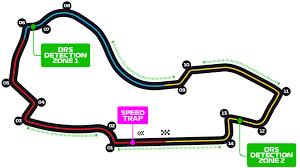
Australian Grand Prix
📍 Melbourne, Australia
🛣️ 5.278 km
🔁 58 laps
🏆 Race lap record: 1:20.260 (Charles Leclerc, 2024)
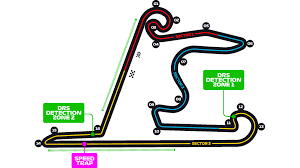
Chinese Grand Prix
📍 Shanghai, China
🛣️ 5.451 km
🔁 56 laps
🏆 Race lap record: 1:32.238 (Michael Schumacher, 2004)
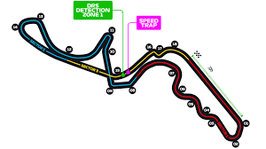
Japanese Grand Prix
📍 Suzuka, Japan
🛣️ 5.807 km
🔁 53 laps
🏆 Race lap record: 1:30.965 (Kimi Antonelli, 2025)
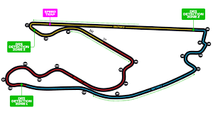
Miami Grand Prix
📍 Miami, USA
🛣️ 5.412 km
🔁 57 laps
🏆 Race lap record: 1:29.708 (Max Verstappen, 2023)
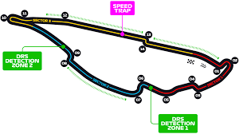
Canadian Grand Prix
📍 Montreal, Canada
🛣️ 4.361 km
🔁 70 laps
🏆 Race lap record: 1:13.078 (Valtteri Bottas, 2019)

Monaco Grand Prix
📍 Monte Carlo, Monaco
🛣️ 3.337 km
🔁 78 laps
🏆 Race lap record: 1:12.909 (Lewis Hamilton, 2021)
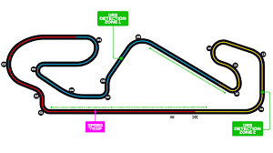
Barcelona-Catalunya Grand Prix
📍 Barcelona, Spain
🛣️ 4.657 km
🔁 66 laps
🏆 Race lap record: 1:15.743 (Oscar Piastri, 2025)
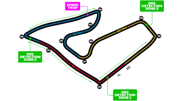
Austrian Grand Prix
📍 Spielberg, Austria
🛣️ 4.318 km
🔁 71 laps
🏆 Race lap record: 1:07.924 (Oscar Piastri, 2025)
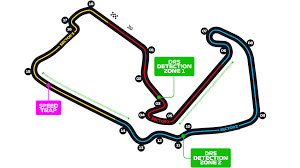
British Grand Prix
📍 Silverstone, UK
🛣️ 5.891 km
🔁 52 laps
🏆 Race lap record: 1:27.097 (Max Verstappen, 2020)
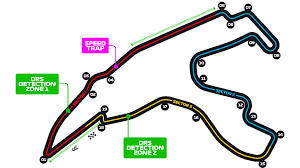
Belgian Grand Prix
📍 Spa-Francorchamps, Belgium
🛣️ 7.004 km
🔁 44 laps
🏆 Race lap record: 1:44.701 (Sergio Pérez, 2024)
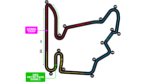
Hungarian Grand Prix
📍 Mogyorod, Hungary
🛣️ 4.381 km
🔁 70 laps
🏆 Race lap record: 1:16.627 (Lewis Hamilton, 2020)
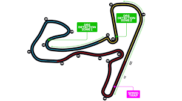
Dutch Grand Prix
📍 Zandvoort, Netherlands
🛣️ 4.259 km
🔁 72 laps
🏆 Race lap record: 1:11.097 (Lewis Hamilton, 2021)
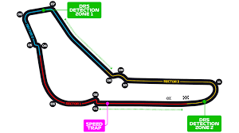
Italian Grand Prix
📍 Monza, Italy
🛣️ 5.793 km
🔁 53 laps
🏆 Race lap record: 1:20.901 (Lando Norris, 2025)
Madrid Grand Prix
📍 Madrid, Spain
🛣️ ~5.5 km
🔁 ~57 laps
🏆 Race lap record: TBD (new circuit)
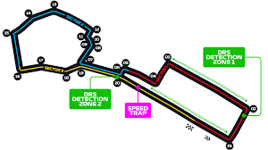
Azerbaijan Grand Prix
📍 Baku, Azerbaijan
🛣️ 6.003 km
🔁 51 laps
🏆 Race lap record: 1:43.009 (Charles Leclerc, 2019)
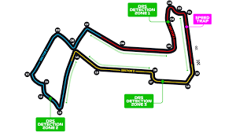
Singapore Grand Prix
📍 Marina Bay, Singapore
🛣️ 4.940 km
🔁 62 laps
🏆 Race lap record: 1:33.808 (Lewis Hamilton, 2025)
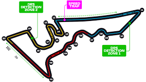
United States Grand Prix
📍 Austin, USA (COTA)
🛣️ 5.513 km
🔁 56 laps
🏆 Race lap record: 1:36.169 (Charles Leclerc, 2019)
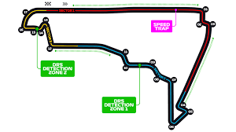
Mexican Grand Prix
📍 Mexico City, Mexico
🛣️ 4.304 km
🔁 71 laps
🏆 Race lap record: 1:17.774 (Valtteri Bottas, 2021)

Sao Paulo Grand Prix
📍 Sao Paulo, Brazil
🛣️ 4.309 km
🔁 71 laps
🏆 Race lap record: 1:10.540 (Valtteri Bottas, 2018)
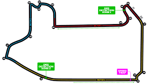
Las Vegas Grand Prix
📍 Las Vegas, USA
🛣️ 6.201 km
🔁 50 laps
🏆 Race lap record: 1:33.365 (Max Verstappen, 2025)
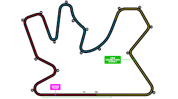
Qatar Grand Prix
📍 Lusail, Qatar
🛣️ 5.380 km
🔁 57 laps
🏆 Race lap record: 1:22.384 (Lando Norris, 2024)

Abu Dhabi Grand Prix
📍 Yas Marina, UAE
🛣️ 5.281 km
🔁 58 laps
🏆 Race lap record: 1:25.637 (Kevin Magnussen, 2024)